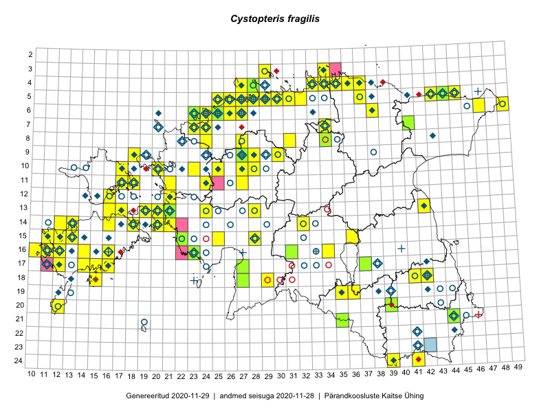

Cystopteris fragilis
Uuendatud: 2016-12-07
Kaardile koondatud taksonid: Cystopteris fragilis (L.) Bernh.; Cystopteris fragilis f. anthriscifolia (Hoffm.) W.D.J. Koch

Kaart põhineb 124 kirjel, neist vaatlusi 121 ja eksemplare 3. Taksonit on leitud 77 ruudust.
| Ruut | Vaatleja(d) | Vaatlusaeg | Kirje tüüp | Viide andmebaasikirjele |
|---|---|---|---|---|
| 05-32 | Rein Kalamees | 2015-06-05 | ruut/ala | vaata PlutoFis |
| 16-23 | Peedu Saar, Liina Oja | 2015-05-15 | ruut/ala | vaata PlutoFis |
| 10-17 | Peedu Saar, Toomas Kukk | 2015-05-26 | ruut/ala | vaata PlutoFis |
| 05-45 | Tiit Hallikma, Toomas Kukk | 2015-07-21 | ruut/ala | vaata PlutoFis |
| 13-20 | Peedu Saar, Elle Roosaluste | 2015-07-12 | ruut/ala | vaata PlutoFis |
| 05-30 | Rein Kalamees, Kersti Püssa | 2015-05-27 | ruut/ala | vaata PlutoFis |
| 06-27 | Toomas Kukk | 2015-06-19 | ruut/ala | vaata PlutoFis |
| 06-27 | Toomas Kukk | 2015-07-13 | punkt | vaata PlutoFis |
| 17-12 | Toomas Kukk, Mari Reitalu | 2014-06-20 | ruut/ala | vaata PlutoFis |
| 05-37 | Rein Kalamees, Kersti Püssa | 2015-05-29 | ruut/ala | vaata PlutoFis |
| 04-37 | Rein Kalamees, Kersti Püssa | 2015-05-31 | ruut/ala | vaata PlutoFis |
| 04-35 | Rein Kalamees, Kersti Püssa | 2015-05-31 | ruut/ala | vaata PlutoFis |
| 04-36 | Rein Kalamees, Kersti Püssa | 2015-05-31 | ruut/ala | vaata PlutoFis |
| 13-17 | Meeli Mesipuu, Kadri Tali | 2015-07-08 | ruut/ala | vaata PlutoFis |
| 07-34 | Jana-Maria Habicht, Ester Valdvee | 2015-07-20 | ruut/ala | vaata PlutoFis |
| 07-34 | Jana-Maria Habicht, Ester Valdvee | 2015-08-15 | ruut/ala | vaata PlutoFis |
| 08-34 | Jana-Maria Habicht, Ester Valdvee | 2015-07-31 | ruut/ala | vaata PlutoFis |
| 14-20 | Meeli Mesipuu | 2015-05-09 | ruut/ala | vaata PlutoFis |
| 14-20 | Meeli Mesipuu | 2015-05-09 | punkt | vaata PlutoFis |
| 12-16 | Eeva-Maria Jeletsky, Tarmo Niitla | 2015-06-21 | ruut/ala | vaata PlutoFis |
| 06-24 | Erkki Otsman, Sergei Smirnov | 2015-05-29 | ruut/ala | vaata PlutoFis |
| 07-34 | Jana-Maria Habicht, Ester Valdvee | 2015-08-15 | punkt | vaata PlutoFis |
| 15-11 | Mari Reitalu, Triin Reitalu | 2015-04-25 | ruut/ala | vaata PlutoFis |
| 14-12 | Mari Reitalu, Triin Reitalu | 2015-05-24 | ruut/ala | vaata PlutoFis |
| 15-12 | Mari Reitalu, Triin Reitalu | 2015-05-24 | ruut/ala | vaata PlutoFis |
| 17-14 | Mari Reitalu, Sirje Azarov | 2015-05-09 | ruut/ala | vaata PlutoFis |
| 16-12 | Mari Reitalu | 2015-06-28 | ruut/ala | vaata PlutoFis |
| 16-12 | Mari Reitalu | 2015-06-16 | ruut/ala | vaata PlutoFis |
| 16-12 | Mari Reitalu | 2015-06-10 | ruut/ala | vaata PlutoFis |
| 16-12 | Mari Reitalu, Triin Reitalu | 2015-07-03 | ruut/ala | vaata PlutoFis |
| 19-35 | Kai Rünk, Ülle Jõgar, Illi Tarmu | 2015-05-16T07:00Z | ruut/ala | vaata PlutoFis |
| 07-34 | Kai Rünk, Ülle Jõgar, Illi Tarmu | 2015-05-22T07:00Z | ruut/ala | vaata PlutoFis |
| 13-19 | Meeli Mesipuu, Kadri Tali | 2015-06-24 | ruut/ala | vaata PlutoFis |
| 15-12 | Mari Reitalu, Oliver Parrest | 2015-07-21 | ruut/ala | vaata PlutoFis |
| 15-36 | Toivo Sepp, Eerik Leibak | 2015-05-13 | ruut/ala | vaata PlutoFis |
| 15-13 | Mari Reitalu, Oliver Parrest | 2015-05-14 | ruut/ala | vaata PlutoFis |
| 17-12 | Mari Reitalu, Triin Reitalu | 2015-05-05 | ruut/ala | vaata PlutoFis |
| 14-16 | Mari Reitalu, Sirje Azarov | 2015-05-09 | ruut/ala | vaata PlutoFis |
| 20-12 | Mari Reitalu, Oliver Parrest | 2015-05-26 | ruut/ala | vaata PlutoFis |
| 13-28 | Liina Oja, Ott Luuk | 2015-05-09 | punkt | vaata PlutoFis |
| 13-28 | Liina Oja, Ott Luuk | 2015-05-09 | ruut/ala | vaata PlutoFis |
| 17-14 | Sirje Azarov, Mari Reitalu | 2015-04-27 | ruut/ala | vaata PlutoFis |
| 16-11 | Mari Reitalu, Triin Reitalu | 2015-05-28 | ruut/ala | vaata PlutoFis |
| 16-10 | Sirje Azarov, Mari Reitalu | 2015-05-22 | ruut/ala | vaata PlutoFis |
| 15-28 | Mari Metsoja, Jaak-Albert Metsoja | 2015-06-12 | ruut/ala | vaata PlutoFis |
| 16-11 | Sirje Azarov, Mari Reitalu | 2015-06-22 | ruut/ala | vaata PlutoFis |
| 10-25 | Aat Sarv | 2015-05-31 | ruut/ala | vaata PlutoFis |
| 06-47 | Timo Luhamäe, Eerik Leibak | 2015-06-01 | ruut/ala | vaata PlutoFis |
| 18-29 | Meeli Mesipuu | 2015-05-22 | ruut/ala | vaata PlutoFis |
| 05-44 | Meeli Mesipuu | 2015-06-01 | ruut/ala | vaata PlutoFis |
| 05-25 | Mari Metsoja, Jaak-Albert Metsoja | 2015-07-30 | ruut/ala | vaata PlutoFis |
| 06-26 | Mari Metsoja, Jaak-Albert Metsoja | 2015-07-29 | ruut/ala | vaata PlutoFis |
| 06-25 | Mari Metsoja, Jaak-Albert Metsoja | 2015-07-25 | ruut/ala | vaata PlutoFis |
| 17-16 | Sirje Azarov, Aira Alasi | 2015-08-17 | ruut/ala | vaata PlutoFis |
| 18-15 | Mari Reitalu | 2014-07-17 | ruut/ala | vaata PlutoFis |
| 16-14 | Mari Reitalu | 2014-07-21 | ruut/ala | vaata PlutoFis |
| 06-24 | Jaak-Albert Metsoja, Mari Metsoja, Ott Luuk | 2015-06-05 | ruut/ala | vaata PlutoFis |
| 06-23 | Mari Metsoja, Jaak-Albert Metsoja, Ott Luuk | 2015-06-04 | ruut/ala | vaata PlutoFis |
| 06-23 | Jaak-Albert Metsoja, Mari Metsoja, Ott Luuk | 2015-06-05 | ruut/ala | vaata PlutoFis |
| 05-44 | Meeli Mesipuu | 2015-06-01 | punkt | vaata PlutoFis |
| 24-39 | Maret Gerz, Jaak-Albert Metsoja, Ott Luuk, Toomas Kukk, Meeli Mesipuu, Thea Kull | 2014-06-09 | ruut/ala | vaata PlutoFis |
| 09-28 | Aat Sarv | 2015-05-02 | ruut/ala | vaata PlutoFis |
| 13-24 | Marek Sammul, Ott Luuk | 2014-06-21 | ruut/ala | vaata PlutoFis |
| 09-27 | Ott Luuk, Jaak-Albert Metsoja, Maret Gerz | 2014-06-10 | ruut/ala | vaata PlutoFis |
| 03-29 | Ott Luuk, Mari Reitalu, Tõnu Ploompuu | 2014-06-01 | ruut/ala | vaata PlutoFis |
| 11-21 | Hanna-Eliisa Luts, Tõnu Ploompuu | 2015-08-13 | ruut/ala | vaata PlutoFis |
| 10-23 | Hanna-Eliisa Luts, Tõnu Ploompuu | 2015-07-16 | ruut/ala | vaata PlutoFis |
| 10-20 | Tõnu Ploompuu, Anna-Grete Rebane, Hanna-Eliisa Luts | 2015-07-20 | ruut/ala | vaata PlutoFis |
| 08-34 | Jana-Maria Habicht, Ester Valdvee | 2015-07-31 | punkt | vaata PlutoFis |
| 09-27 | Aat Sarv | 2015-05-15 | ruut/ala | vaata PlutoFis |
| 09-27 | Aat Sarv | 2015-07-16 | ruut/ala | vaata PlutoFis |
| 10-27 | Aat Sarv | 2015-05-15 | ruut/ala | vaata PlutoFis |
| 15-28 | Ott Luuk, Tiit Hallikma | 2016-04-28 | ruut/ala | vaata PlutoFis |
| 06-27 | Tõnu Ploompuu | 2015-08-11 | ruut/ala | vaata PlutoFis |
| 15-22 | Peedu Saar, Toomas Kukk | 2016-05-14 | punkt | vaata PlutoFis |
| 08-31 | Thea Kull, Meeli Mesipuu | 2016-05-13 | punkt | vaata PlutoFis |
| 15-22 | Toomas Kukk, Peedu Saar | 2016-05-14 | ruut/ala | vaata PlutoFis |
| 11-24 | Ott Luuk, Tiit Hallikma | 2016-05-12 | ruut/ala | vaata PlutoFis |
| 08-24 | Sirje Lagle, Tõnu Ploompuu | 2015-08-18 | ruut/ala | vaata PlutoFis |
| 11-24 | Tiit Hallikma, Ott Luuk | 2016-05-12 | punkt | vaata PlutoFis |
| 18-29 | Toomas Kukk, Tiit Hallikma | 2016-06-03 | ruut/ala | vaata PlutoFis |
| 11-27 | Andrus Jair, Tõnu Ploompuu | 2015-05-17 | ruut/ala | vaata PlutoFis |
| 06-25 | Toomas Kukk, Sander Laherand | 2016-07-05 | ruut/ala | vaata PlutoFis |
| 09-18 | Toomas Kukk, Sander Laherand | 2016-07-07 | ruut/ala | vaata PlutoFis |
| 15-25 | Toomas Kukk, Oliver Parrest | 2016-07-08 | ruut/ala | vaata PlutoFis |
| 06-26 | Tiina Elvisto, Eerik Leibak | 2016-07-04 | ruut/ala | vaata PlutoFis |
| 10-17 | Eeva-Maria Jeletsky, Tarmo Niitla | 2016-07-14 | ruut/ala | vaata PlutoFis |
| 09-30 | Sander Laherand, Toomas Kukk | 2016-07-06 | ruut/ala | vaata PlutoFis |
| 09-27 | Ulvi Selgis | 2016-07-23 | punkt | vaata PlutoFis |
| 06-26 | Ulvi Selgis | 2016-07-16 | punkt | vaata PlutoFis |
| 13-19 | Ulvi Selgis | 2016-06-26 | ruut/ala | vaata PlutoFis |
| 14-32 | Toomas Kukk, Liina Oja | 2016-07-21 | ruut/ala | vaata PlutoFis |
| 05-37 | Tõnu Ploompuu, Eerik Leibak | 2016-07-27 | ruut/ala | vaata PlutoFis |
| 05-30 | Sander Laherand, Eerik Leibak | 2016-07-29 | ruut/ala | vaata PlutoFis |
| 06-49 | Toomas Kukk | 2016-07-23 | ruut/ala | vaata PlutoFis |
| 05-25 | Sander Laherand, Toomas Kukk | 2016-07-05 | ruut/ala | vaata PlutoFis |
| 11-18 | Sander Laherand, Peedu Saar, Nele Jõessar | 2016-08-08 | ruut/ala | vaata PlutoFis |
| 13-21 | Aat Sarv, Maret Gerz | 2016-07-05 | ruut/ala | vaata PlutoFis |
| 04-35 | Sander Laherand, Ott Luuk, Nele Jõessar | 2016-07-26 | ruut/ala | vaata PlutoFis |
| 05-31 | Sander Laherand, Toomas Kukk | 2016-08-30 | ruut/ala | vaata PlutoFis |
| 13-19 | Mari Reitalu, Sirje Azarov | 2016-08-16 | ruut/ala | vaata PlutoFis |
| 14-18 | Mari Reitalu | 2016-08-15 | ruut/ala | vaata PlutoFis |
| 14-20 | Mari Reitalu, Sirje Azarov | 2016-08-17 | ruut/ala | vaata PlutoFis |
| 09-27 | Rein Kalamees, Liina Oja | 2016-07-06 | ruut/ala | vaata PlutoFis |
| 20-12 | Mari Reitalu, Sirje Azarov | 2016-08-08 | ruut/ala | vaata PlutoFis |
| 19-36 | Sander Laherand | 2016-09-20 | punkt | vaata PlutoFis |
| 06-24 | Peedu Saar, Ott Luuk | 2016-09-06 | ruut/ala | vaata PlutoFis |
| 16-16 | Mari Reitalu, Sirje Azarov | 2016-07-26 | ruut/ala | vaata PlutoFis |
| 13-17 | Peedu Saar, Ott Luuk | 2016-08-29 | ruut/ala | vaata PlutoFis |
| 13-16 | Peedu Saar, Ott Luuk | 2016-08-31 | ruut/ala | vaata PlutoFis |
| 06-38 | Tõnu Ploompuu | 2016-07-17 | ruut/ala | vaata PlutoFis |
| 09-30 | Ott Luuk, Peedu Saar | 2016-09-06 | ruut/ala | vaata PlutoFis |
| 10-28 | Peedu Saar, Timo Luhamäe, Johannes Kõdar | 2016-07-06 | ruut/ala | vaata PlutoFis |
| 05-28 | Kadi-Liis Kesler, Tiina Elvisto | 2015-05-12 | ruut/ala | vaata PlutoFis |
| 13-16 | Ott Luuk, Peedu Saar | 2016-08-31 | punkt | vaata PlutoFis |
| 03-29 | Kadi-Liis Kesler | 2015-07-20 | ruut/ala | vaata PlutoFis |
| 16-31 | Elle Rajandu, Indrek Tammekänd | 2016-07-20 | ruut/ala | vaata PlutoFis |
| 04-36 | Meeli Mesipuu, Liina Oja | 2016-07-26 | ruut/ala | vaata PlutoFis |
| 03-34 | Hannes Pehlak, Toomas Kukk | 2016-07-26 | ruut/ala | vaata PlutoFis |
| 04-34 | Hannes Pehlak, Toomas Kukk | 2016-07-26 | ruut/ala | vaata PlutoFis |
| 16-34 | Jaak-Albert Metsoja, Lena Neuenkamp, Sirje Azarov | 2016-07-20 | ruut/ala | vaata PlutoFis |
| 16-23 | Peedu Saar, Liina Oja | 2015-05-21 | eksemplar | vaata PlutoFis |
| 08-34 | Jana-Maria Habicht | 2015-07-31 | eksemplar | vaata PlutoFis |
| 09-27 | Ott Luuk | 2014-06-10 | eksemplar | vaata PlutoFis |